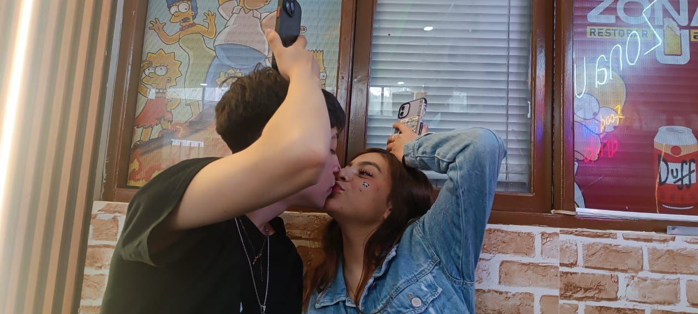

¡Hola, Aileen! ❤️
Este primer mes ha sido el inicio de algo mágico...
¿Quieres ser mi San Valentín?
¡Sabía que dirías que sí!
Eres la persona que más feliz me hace en el mundo. ¡Te amo!
Este primer mes ha sido el inicio de algo mágico...
¿Quieres ser mi San Valentín?
Eres la persona que más feliz me hace en el mundo. ¡Te amo!